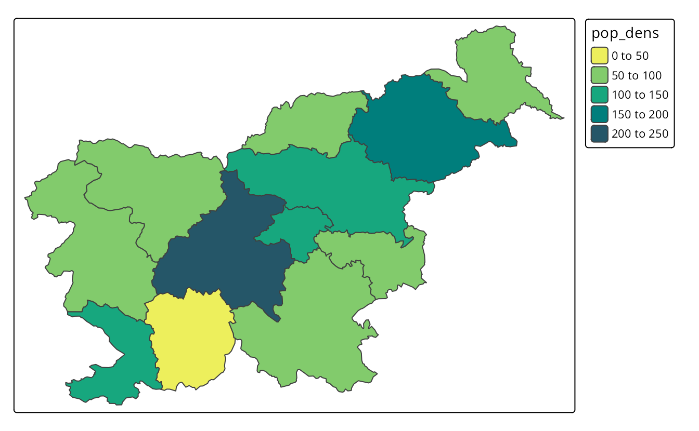
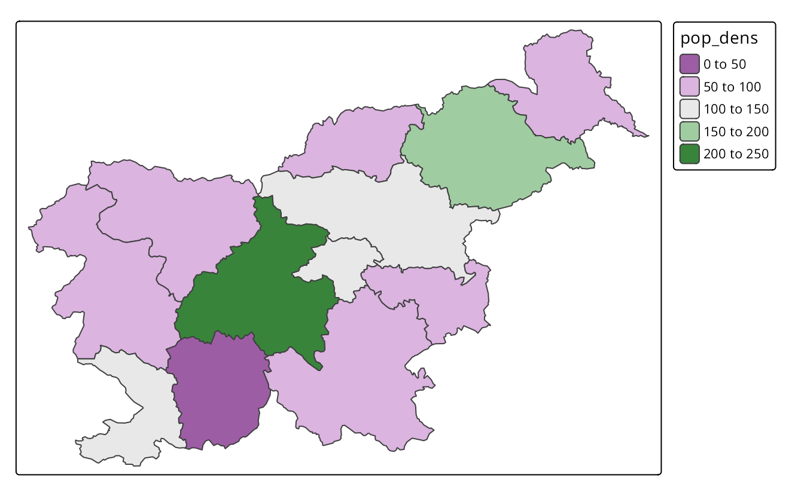
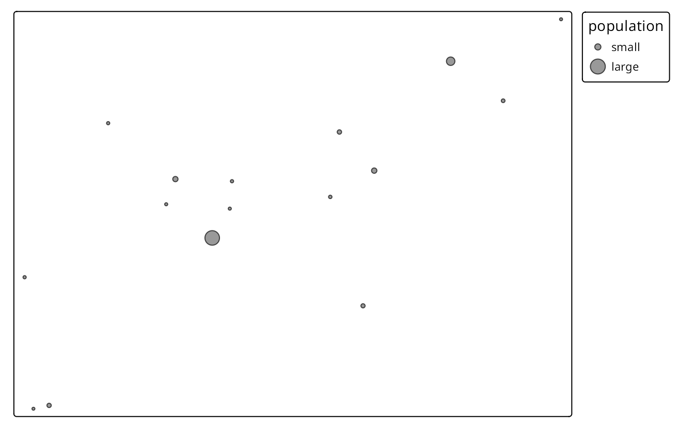
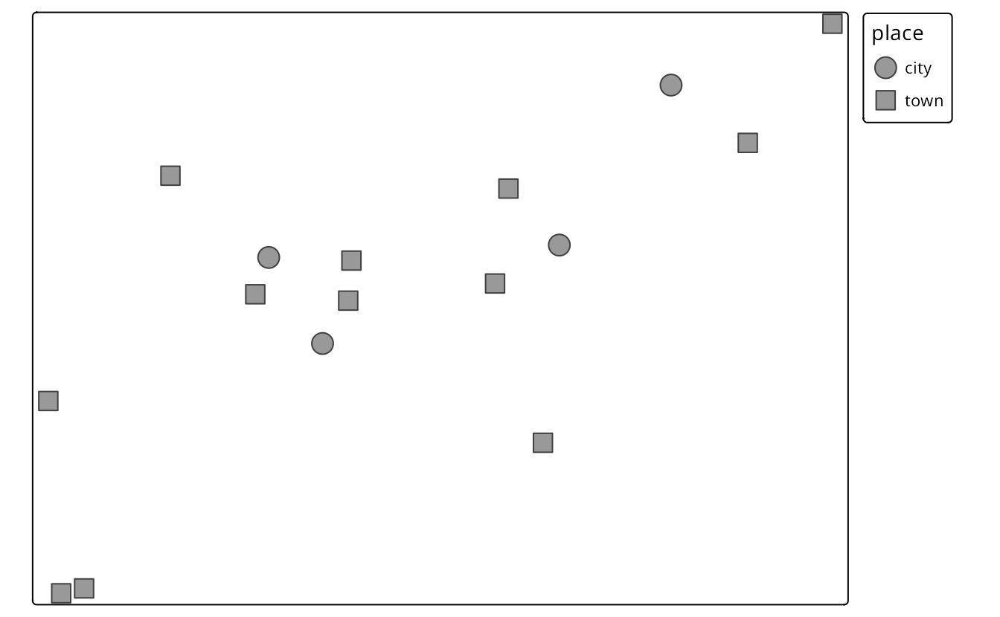
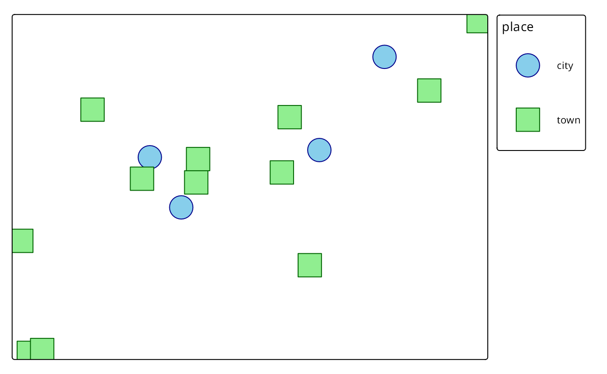
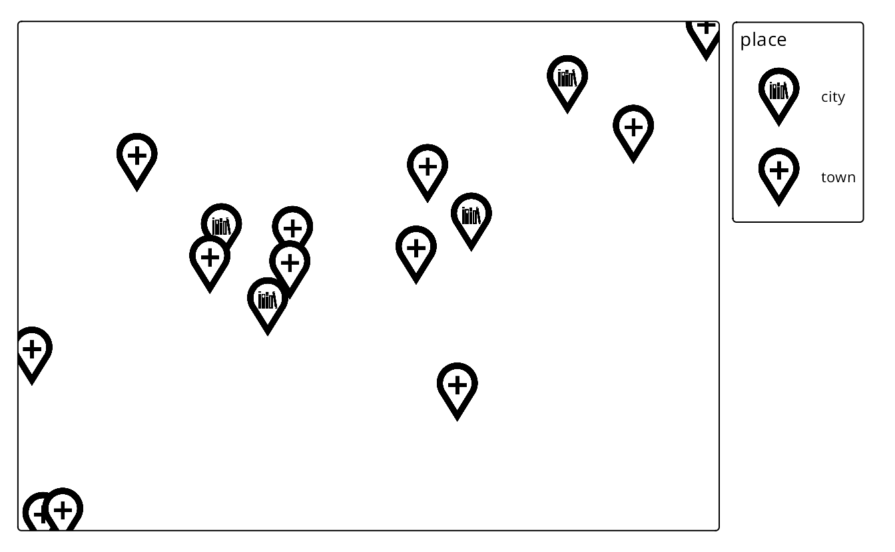
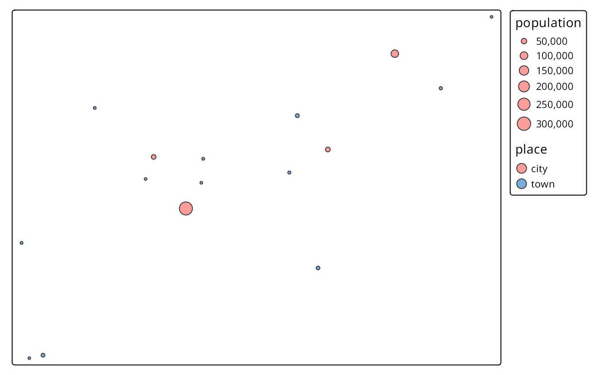

7 Visual variables
Visual variables are methods to translate information given in variables into many types of visualizations, including maps. Basic visual variables are color, size, and shape1. All of them can influence our perception and understanding of the presented information, therefore it is worth to understand when and how they can be used.
The use of visual variables on maps depends on two main things: (a) type of the presented variable, and (b) type of the map layer. Figure 7.1 shows examples of different visual variables. Color is the most universal visual variable. It can represent both qualitative (categorical) and quantitative (numerical) variables, and also we can color symbols, lines, or polygon fillings (Section 7.1.1 and ?sec-color-scale-styles). Sizes, on the other hand, should focus on quantitative variables. Small symbols could represent low values of a given variable, and the higher the value, the larger the symbol. Quantitative values of line data can be shown with the widths of the lines (Section 7.2). The use of shapes usually should be limited to qualitative variables, and different shapes can represent different categories of points (Section 7.3). Similarly, qualitative variables in lines can be presented by different line types. Values of polygons usually cannot be represented by either shapes or sizes, as these two features are connected to the geometries of the objects.
7.1 Colors
Colors, along with sizes and shapes, are the most often used to express values of attributes or their properties. Proper use of colors draws the attention of viewers and has a positive impact on the clarity of the presented information. On the other hand, poor decisions about colors can lead to misinterpretation of the map. Section 7.1.1 explains how colors are represented in R, how to decide which colors to use, and how to set different colors on maps. ?sec-color-scale-styles focuses on how to specify color breaks and which types of scales styles are appropriate in different cases.
7.1.1 Color palettes
Colors in R are created based either on the color name or its hexadecimal form. R understands 657 built-in color names, such as "red", "lightblue" or "gray90", that are available using the colors() function. Hexadecimal form, on the other hand, can represent 16,777,216 unique colors. It consists of six-digits prefixed by the # (hash) symbol, where red, green, and blue values are each represented by two characters. In hexadecimal form, 00 is interpreted as 0.0 which means a lack of a particular color and FF means 1.0 and shows that the given color has maximal intensity. For example, #000000 represents black color, #FFFFFF white color, and #00FF00 green color.
Using a single color we are able to draw points, lines, polygon borders, or their areas. In that scenario, all of the elements will have the same color. However, often we want to represent different values in our data using different colors. This is a role for color palettes. A color palette is a set of colors used to distinguish the values of variables on maps.
Color palettes in R are usually stored as a vector of either color names or hexadecimal representations. For example, c("red", "green", "blue") or c("#66C2A5", "#FC8D62", "#8DA0CB"). It allows every one of us to create our own color palettes. However, the decision on how to decide which colors to use is not straightforward, and usually requires thinking about several aspects.
Firstly, what kind of variable we want to show? Is it a categorical variable where each value represents a group or a numerical variable in which values have order? The variable type impacts how it should be presented on the map. For categorical variables, each color usually should receive the same perceptual weight, which is done by using colors with the same brightness, but different hue. On the other hand, for numerical variables, we should easily understand which colors represent lower and which represent higher values. This is done by manipulating colorfulness and brightness. For example, low values could be presented by a blue color with low colorfulness and high brightness, and with growing values, colorfulness increases and brightness decreases.
Next consideration is related to how people perceive some colors. Usually, we want them to be able to preliminary understand which values the colors represent without looking at the legend – colors should be intuitive. For example, in the case of categorical variables representing land use, we usually want to use some type of blue color for rivers, green for trees, and white for ice. This idea also extends to numerical variables, where we should think about the association between colors and cultural values. The blue color is usually connected to cold temperature, while the red color is hot or can represent danger or something not good. However, we need to be aware that the connection between colors and cultural values varied between cultures.
Another thing to consider is to use a color palette that is accessible for people with color vision deficiencies (color blindness). There are several types of color blindness, with the red-green color blindness (deuteranomaly) being the most common. It is estimated that up to about 8% of the male population and about 0.5% of the female population in some regions of the world is color blind (Birch 2012; Sharpe et al. 1999).
The relation between the selected color palette and other map elements or the map background should be also taken into a consideration. For example, using a bright or dark background color on a map has an impact on how people will perceive different color palettes.
Generally, color palettes can be divided into three main types (Figure 7.2):
- Categorical (also known as Qualitative): used for presenting categorical information, for example, categories or groups. Every color in this type of palettes should receive the same perceptual weight, and the order of colors is meaningless. Categorical color palettes are usually limited to dozen or so different colors, as our eyes have problems with distinguishing a large number of different hues. Their use includes, for example, regions of the world or land cover categories.
- Sequential: used for presenting continuous variables, in which order matters. Colors in this palette type changes from low to high (or vice versa), which is usually underlined by luminance differences (light-dark contrasts). Sequential palettes can be found in maps of GDP, population density, elevation, and many others.
- Diverging: used for presenting continuous variables, but where colors diverge from a central neutral value to two extremes. Therefore, in sense, they consist of two sequential palettes that meet in the midpoint value. Examples of diverging palettes include maps where a certain temperature or median value of household income is use as the midpoint. It can also be used on maps to represent difference or change as well.

Gladly, a lot of work has been put on creating color palettes that are grounded in the research of perception and design. Currently, several dozens of R packages contain hundreds of color palettes. The most popular among them are RColorBrewer (Neuwirth 2014) and viridis (Garnier 2018). RColorBrewer builds upon a set of perceptually ordered color palettes (Harrower and Brewer 2003) and the associated website at https://colorbrewer2.org. The website not only presents all of the available color palettes, but also allow to filter them based on their properties, such as being colorblind safe or print-friendly. The viridis package has five color palettes are perceptually-uniform and suitable for people with color blindness. Four palettes is this package (“viridis”, “magma”, “plasma”, and “inferno”) are derived from the work on the color palettes for the matplotlib Python library. The last one, “cividis”, is based on the work of Nuñez, Anderton, and Renslow (2018).
RColorBrewer::brewer.pal(7, "RdBu")
#> [1] "#B2182B" "#EF8A62" "#FDDBC7" "#F7F7F7" "#D1E5F0" "#67A9CF" "#2166AC"
viridis::viridis(7)
#> [1] "#440154FF" "#443A83FF" "#31688EFF" "#21908CFF" "#35B779FF" "#8FD744FF"
#> [7] "#FDE725FF" In the last few years, the grDevices package that is an internal part of R, have received several improvements over color palette handling.2 It includes creation of hcl.colors() and palette.colors(). The hcl.colors() function incorporates color palettes from several R packages, including RColorBrewer, viridis, rcartocolor (CARTO 2019; Nowosad 2018), and scico (Crameri 2018; Pedersen and Crameri 2020). You can get the list of available palette names for hcl.colors() using the hcl.pals() function and visualize all of the palettes with colorspace::hcl_palettes(plot = TRUE). The palette.colors() function adds several palettes for categorical data. It includes "Okabe-Ito" suited for color vision deficiencies or "Polychrome 36" that has 36 unique colors (Coombes et al. 2019). You can find the available names of the palettes for this function using palette.pals()
grDevices::hcl.colors(7, "Oslo")
#> [1] "#FCFCFC" "#C2CEE8" "#86A2D3" "#3C79C0" "#275182" "#132B48" "#040404"
grDevices::palette.colors(7, "Okabe-Ito")
#> [1] "#000000" "#E69F00" "#56B4E9" "#009E73" "#F0E442" "#0072B2" "#D55E00"The cols4all package is a set of tools for selecting color palettes; it also includes all of the groups of color palettes mentioned above and more. Its main function is cols4all::c4a_gui() that starts an interactive application allowing to see and examine hundreds of color palettes. Each color palette shown cols4all::c4a_gui() can be used in tmap.
One of the most widely used color palettes is “rainbow” (the rainbow() function in R). It was inspired by colors of a rainbow – a set of seven colors going from red to violet. However, this palette has a number of disadvantages, including irregular changes in brightness affecting its interpretation or being unsuitable for people with color vision deficiencies (Borland and Taylor Ii 2007; Stauffer et al. 2015; Quinan et al. 2019). Depending on a given situation, there are many palettes better suited for visualization than “rainbow”, including sequential "viridis" and "ag_sunset" or diverging "pu_gn" and "geyser". All of them can be specified in tmap.3 More examples showing alternatives to the “rainbow” palette are in the documentation of the colorspace package at https://colorspace.r-forge.r-project.org/articles/endrainbow.html (Zeileis et al. 2019).
By default, the tmap package attempts to identify the type of the used variable. For example, it uses "area7" for a categorical (unordered) variable, "blues3" for a sequential variable, and “pu_gn” for a diverging one (Figure 7.3).
tm_shape(worldvector) +
tm_polygons("life_expectancy")There are three main ways to specify color palettes as an values argument of the tm_scale() family of functions. This argument accepts (1) a vector of colors, (2) a palette function, or (3) one of the build-in palette names (Figure 7.3). A vector of colors can be specified using color names or hexadecimal representations (Figure 7.3). Importantly, the length of the provided vector does not need to be equal to the number of colors in the map legend. tmap automatically interpolates new colors in the case when a smaller number of colors is provided.
tm_shape(worldvector) +
tm_polygons("life_expectancy",
fill.scale = tm_scale(values = c("yellow", "darkgreen")))Another approach is to provide the output of a palette function (Figure 7.3). In the example below, we derived seven colors from "ag_GrnYl" palette. This palette goes from green colors to yellow ones, however, we wanted to reverse the order of this palette. Thus, we also used the rev() function here.
tm_shape(worldvector) +
tm_polygons("life_expectancy",
fill.scale = tm_scale(values = rev(hcl.colors(7, "ag_GrnYl"))))The last approach is to use one of the names of color palettes build-in in tmap (Figure 7.3). In this example, we used the "brewer.yl_gn" palette that goes from yellow to green.
tm_shape(worldvector) +
tm_polygons("life_expectancy",
fill.scale = tm_scale(values = "brewer.yl_gn"))It is also possible to reverse the order of any named color palette by using the - prefix. Therefore, "-yl_gn" will return a palette going from green to yellow.



hcl.colors() function

The default color palette for positive numerical variables is "blues3" as seen in Figure 7.4 (a). On the other hand, when the given variable has both negative and positive values, then tmap uses the "pu_gn" color palette, with purple colors below the midpoint value, light gray color around the midpoint value, and green colors above the midpoint value. The use of diverging color palettes can be adjusted using the midpoint argument. It has a value of 0 as the default, however, it is possible to change it to any other value. For example, we want to create a map that shows countries with life expectancy below and above the median life expectancy of about 73 years. To do that, we just need to set the midpoint argument to this value (Figure 7.4 (b)).
# mean(x$lifeExp, na.rm = TRUE)
tm_shape(worldvector) +
tm_polygons(fill = "life_expectancy",
fill.scale = tm_scale(midpoint = 73))

Now the countries with low life expectancy are presented with purple colors, light gray areas represent countries with life expectancy around the median value (the midpoint in our case), and the countries with high life expectancy are represented by green colors.
The above examples all contain several polygons with missing values of a given variable. Objects with missing values are, by default, represented by gray color and a related legend label Missing. However, it is possible to change this color with the value.na argument and its label with label.na.
tmap has a special way to set colors for categorical maps manually. It works by providing a named vector to the values argument. In this vector, names of the categories from the categorical variable are the vector names, and specified colors are the vector values. You can see it in the example below, where we plot the "wb_region" categorical variable (Figure 7.5). Each category in this variable (e.g., "South Asia") has a new, connected to it color (e.g., "#df5454").
tm_shape(worldvector) +
tm_polygons("wb_region",
fill.scale = tm_scale(values = c(
"Latin America & Caribbean" = "#11467b",
"Europe & Central Asia" = "#ffd14d",
"Middle East & North Africa" = "#86909a",
"Sub-Saharan Africa" = "#14909a",
"East Asia & Pacific" = "#7fbee9",
"South Asia" = "#df5454",
"North America" = "#7b1072")
))
Finally, visualized colors can be additionally modified. It includes setting the col_alpha and fill_alpha arguments that represents the transparency of the used colors. By default, the colors are not transparent at all as the value of col_alpha and fill_alpha is 1. However, we can decrease this value to 0 – a total transparency. The col_alpha/ fill_alpha argument is useful in two ways: one – it allows us to see-through some large objects (e.g., some points below the polygons or a hillshade map behind the colored raster of elevation), second – it makes colors more subtle.
7.2 Sizes
ei_points = read_sf("data/easter_island/ei_points.gpkg")
volcanos = subset(ei_points, type == "volcano")Differences in sizes between objects are relatively easy to recognize on maps. Sizes can be used for points, lines (line widths), or text to represent quantitative (numerical) variables, where small values are related to small objects and large values are presented by large objects. Large sizes can be also used to attract viewers’ attention.
By default, tmaps present points, lines, or text objects of the same size. For example, tm_symbols() returns a map where each object is a circle with a consistent size4. We can change the sizes of all objects using the size argument (Figure 7.6 (a)).
tm_shape(volcanos) +
tm_symbols(size = 0.5) On the other hand, if we provide the name of the numerical variable in the size argument (e.g., "elevation"), then symbol sizes are scaled proportionally to the provided values. Objects with small values will be represented by smaller circles, while larger values will be represented by larger circles (Figure 7.6 (b)).
tm_shape(volcanos) +
tm_symbols(size = "elevation") We can adjust size legend breaks with ticks and the corresponding labels with labels (Figure 7.6 C) as arguments of the tm_scale function provided to the size.scale argument.
For example in the above code, we just show examples of how symbols with elevation of 100 and 600 meters about see level like on the map.



Widths of the lines can represent values of numerical variables for line data similar to sizes of the symbols for point data. The lwd argument in tm_lines() creates thin lines for small values and thick lines for large values of the given variable (Figure 7.7).
ei_roads = read_sf("data/easter_island/ei_roads.gpkg")
tm_shape(ei_roads) +
tm_lines(lwd = "strokelwd")
In the above example, values of the "strokelwd" are divided into four groups and represented by four line widths. Lines’ thickness can be change using the values.scale argument of tm_scale(), where the value of 1 is the default, and increasing this values increases lines’ thickness.
Text labels have a role to name features on a map or just to highlight some of them. Usually, the size of text labels is consistent for the same spatial objects. However, text labels can be also used to represent the values of some numerical variables. Figure 7.8 shows an example, in which text labels show names of different volcanos areas, while their sizes are related to their elevations.
tm_shape(volcanos) +
tm_text(text = "name", size = "elevation") +
tm_layout(legend.outside = TRUE)
7.3 Shapes
Shapes allow representing different categories of point data. They can be very generic, e.g., circle or square, just to be able to differentiate between categories, but often we use symbols that we associate with different types of features. For example, we use the letter P for parking lots, I for information centers, an airplane symbol for airports, or a bus symbol for bus stops.
To use different shapes, we should use the shape argument in the tm_symbols() function. It expects the name of the categorical variable.
tm_shape(ei_points) +
tm_symbols(shape = "type",
shape.legend = tm_legend(title = "Type:",
labels = c("Cave entrance", "Peak", "Volcano")))By default, tmap uses symbols of filled circle, square, diamond, point-up triangle, and point-down triangle5. However, it is also possible to customize used symbols, their title, and labels. Legend title related to shapes their labels is modified with the shape.legend argument.
Shapes can be specified with the shapes argument, that allows using one of three options. The first one is a numeric value that specifies the plotting character of the symbol. A complete list of available symbols and their corresponding numbers is in the ?pch function’s documentation.
tm_shape(ei_points) +
tm_symbols(shape = "type",
shape.scale = tm_scale(values = c(0, 2, 5)))Second option is to use a grob object.
# library(grid)
# library(ggplotify)
library(ggplot2)
# p1 = as.grob(~barplot(1:10))
# p2 = as.grob(expression(plot(rnorm(10), yaxt = "n", xaxt = "n", ann = FALSE, bty = "n")))
# p3 = as.grob(function() plot(sin, yaxt = "n", xaxt = "n", ann = FALSE, bty = "n"))
p4 = ggplotGrob(ggplot(data.frame(x = 1:5, y = 1:5), aes(x, y)) + geom_point() + theme_void())tm_shape(ei_points) +
tm_symbols(shape = "type",
shape.scale = tm_scale(values = list(p4, p4, p4)))The last possibility is to use an icon specification created with the tmap_icons() function, that uses any png images. The tmap_icons() function accepts a vector of file paths or urls, and also allows setting the width and height of the icon. In our example, we have three distinct groups, therefore we need to create new icons based on three images – icon1.png, icon2.png, and icon3.png in this case.
my_icons = tmap_icons(c("images/icon1.png",
"images/icon2.png",
"images/icon3.png"))Now, we can use the prepared icons in the shapes argument (Figure 7.9 (d)).
tm_shape(ei_points) +
tm_symbols(shape = "type",
shape.scale = tm_scale(values = my_icons))




7.4 Mixing visual variables
The values of a given variable can be expressed by different categorical or sequential colors in polygons. Lines can be also colored by one variable, but also widths of the lines can represent values of another quantitative variable. When we use symbols, then we are able to use colors for one qualitative or quantitative variable, sizes for a quantitative variable, and shapes for another qualitative variable. Therefore, it is possible to mix some visual variables for symbols and lines. This section shows only some possible examples of mixing visual variables.
Figure 7.10 (a) shows symbols, which sizes are scales based on the sv variable and they are colored using the values from elevation. This can be set with the size and fill arguments.
tm_shape(ei_points) +
tm_symbols(size = "sv",
fill = "elevation")We can also modify all of the visual variables using the additional arguments explained in the next sections. For example, we can set the color style, color palette, or specify shapes (Figure 7.10 (b)).
tm_shape(ei_points) +
tm_symbols(fill = "elevation",
fill.scale = tm_scale(values = "Greens"),
shape = "type",
shape.scale = tm_scale(values = c(23, 24, 25)))


For line data, we can present its qualitative and quantitative variables using colors and quantitative variables using sizes (line widths) (Figure 7.11).

Other visual variables include position, orientation, and texture.↩︎
Learn more about them at https://developer.r-project.org/Blog/public/2019/04/01/hcl-based-color-palettes-in-grdevices/ and https://developer.r-project.org/Blog/public/2019/11/21/a-new-palette-for-r/index.html.↩︎
You can also derive them using
cols4all::c4a()function.↩︎The default value of size is 1, which corresponds to the area of symbols that have the same height as one line of text.↩︎
They are represented in R by numbers from 21 to 25.↩︎